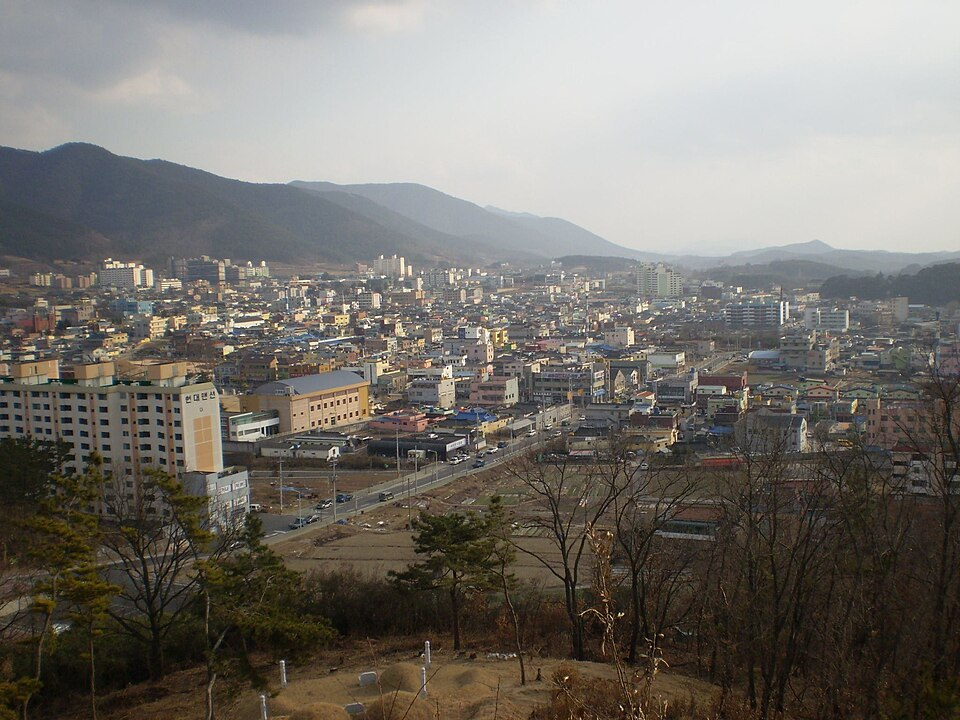

창녕 검정고시 — 퇴근 뒤 하루 한 시간으로 버티는 법

일하면서 준비하시는 분들이 가장 많이 하시는 말이 “시간이 없다”입니다. 그런데 이야기를 들어 보면 시간이 아예 없는 경우는 드뭅니다. 시간이 정해져 있지 않아서 매일 새로 결정해야 하는 것이 진짜 문제입니다. 창녕 검정고시를 일과 병행해 준비하신다면, 아래 네 가지만 정리하셔도 훨씬 오래 버티실 수 있습니다.
양이 아니라 시간을 고정합니다
“오늘은 한 단원 끝내자”로 정하면 대부분 며칠 못 갑니다. 야근이 있거나 몸이 안 따라 주는 날이 반드시 오는데, 그날 목표를 못 채우면 실패한 기분으로 하루를 마감하게 되기 때문입니다. 그게 며칠 쌓이면 그만두게 됩니다.
그래서 분량이 아니라 시간을 정하시길 권합니다. “퇴근하고 씻고 나서 한 시간” 처럼 앞뒤에 붙일 일상 행동까지 같이 정하는 것이 요령입니다. 그 한 시간에 얼마를 나갔든 그날은 지킨 겁니다.
시간을 고정하면 “오늘 공부할까 말까”를 매일 고민하지 않게 됩니다. 이 고민을 없애는 것만으로도 실제 공부량이 늘어납니다.
한 번에 다 붙지 않아도 됩니다
성인 준비생이 가장 부담스러워하는 게 “전 과목을 한꺼번에 봐야 한다”는 생각입니다. 그런데 검정고시는 과목마다 60점을 넘기면 그 과목이 합격으로 남습니다.
그래서 일하면서 준비하실 때는 회차를 나누는 편이 현실적입니다. 이번에는 상대적으로 부담이 적은 과목을 확실히 붙여 두고, 다음에 남은 과목만 집중해서 보는 방식입니다. 한 번에 다 붙이려다 전부 어중간해지는 것보다 훨씬 안전합니다.
어떤 과목을 먼저 붙일지는 기출을 한 회차 풀어 보면 금방 갈립니다. 지금 상태에서 60점에 가까운 과목이 있으면 그게 1순위입니다.
피곤한 날을 위한 최소 분량을 미리 정해 둡니다
아무리 시간을 정해 놔도 도저히 안 되는 날이 옵니다. 이때 “오늘은 그냥 넘기자”가 되면 다음 날도 넘기기 쉬워집니다. 한 번 끊긴 흐름을 다시 잇는 게 생각보다 힘듭니다.
그래서 미리 10분짜리 최소 분량을 정해 두세요. 전에 틀린 문제 옆에 적어 둔 메모를 읽는다든지, 용어 정리 한 장을 훑는다든지 하는 정도면 충분합니다. 잘하려는 게 아니라 끊지 않으려는 것이 목적입니다.
주말에 몰아서 하는 건 마지막 수단입니다
평일에 못 한 걸 주말에 몰아서 하겠다는 계획은 대부분 지켜지지 않습니다. 쉬는 날에 대여섯 시간을 앉아 있는 건 생각보다 어렵고, 한 번 실패하면 다음 주말까지 미루게 됩니다.
주말은 새 진도보다 정리에 쓰시는 편이 낫습니다. 그 주에 본 것 중 헷갈렸던 것만 다시 보고, 다음 주에 볼 범위를 정하는 데 한 시간 정도면 충분합니다. 평일 한 시간 + 주말 정리 한 시간이 주말 몰아치기보다 오래가고 점수도 잘 붙습니다.
창녕에서 이렇게 함께합니다
저희는 1:1 맞춤 과외라 수업 시간을 근무 일정에 맞춰 잡습니다. 정해진 시간표에 사람을 맞추지 않고, 퇴근 뒤 늦은 시간이나 쉬는 날에 맞춰 진행합니다. 이번 회차에 어떤 과목을 붙일지, 남은 과목은 다음에 어떻게 나눌지도 같이 정해 드립니다. 창녕군과 인근 지역은 방문 수업이 가능하고, 이동이 부담되면 화상(줌) 수업으로 집에서 그대로 진행합니다.